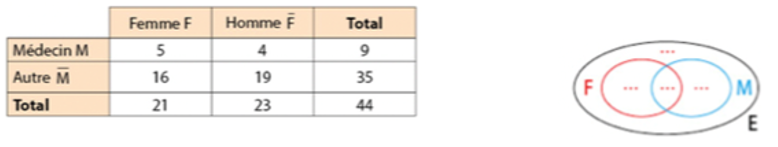
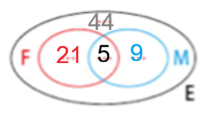
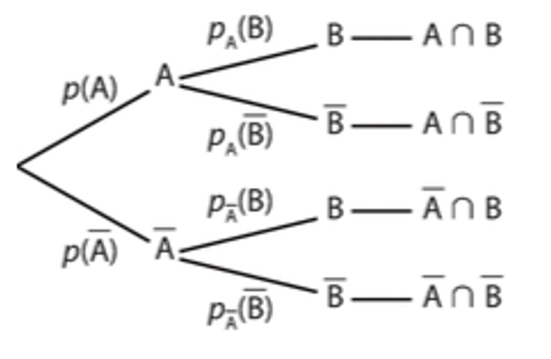
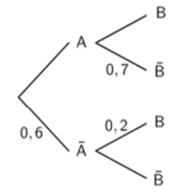
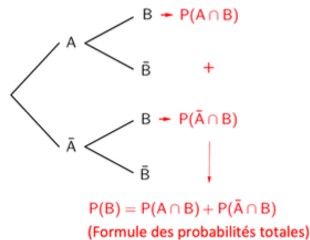
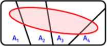
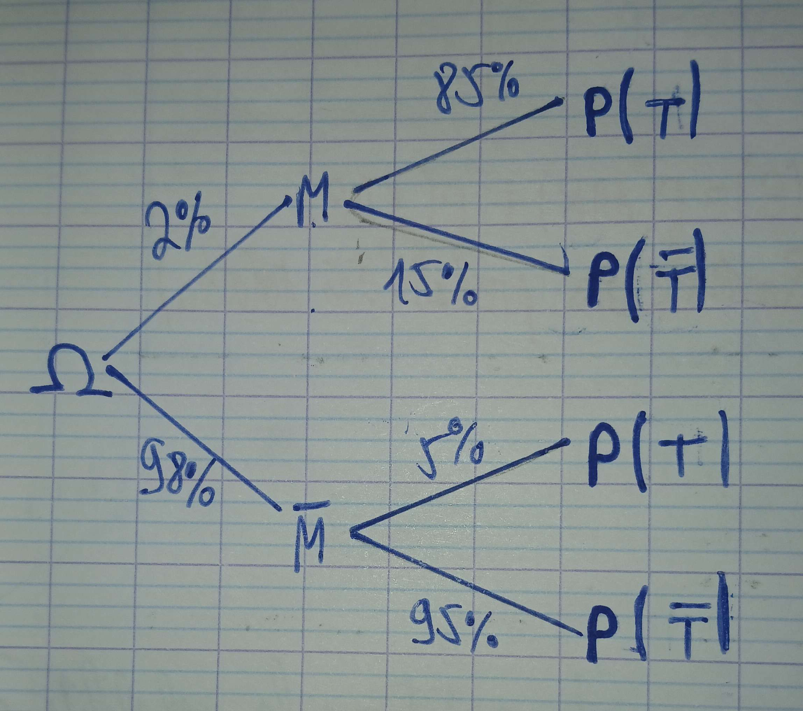

Chapitre 5 - Probabilités conditionnelles
I - Rappels sur les probabilités
Définition : L'ensemble de toutes les issues (ou éventualités) possibles d'une expérience aléatoire s'appelle l'univers de cette expérience aléatoire (souvent noté \(\Omega\). Un sous ensemble de cet univers s'appelle un événement.
Propriété : Une probabilité est toujours un nombre compris entre 0 et 1. Dans le cas où les issues sont équiprobables (c'est-à-dire qu'elles ont toutes les mêmes chances de se produire), la probabilité d'un événement est le quotient :
\(P(A)=\frac{\text{Nombre de cas favorables en} A}{\text {Nombre de cas possibles dans l'univers}}\)
Définition :
- L'événement contraire d'un événement \(A\) se réalise dès que \(A\) ne se réalise pas. L'événement contraire est noté \(\bar{A}\).
- L'intersection \(A\cap B\) (lire "\(A\) inter \(B\)") de deux événements est l'événement qui se réalise lorsque \(A\) ET \(B\) se réalisent simultanément.
- La réunion `\(A\cup B\) (lire "\(A\) union \(B\)") de deux événements est l'événement qui se réalise lorsque l'un au moins des deux événements se réalise (l'un OU l'autre OU les deux).
Propriété : Quels que soient les événements \(A\) et \(B\) :
- \(P(\bar{A})=1-P(A)\)
- \(P(A\cup B)=P(A)+P(B)-P(A\cap B)\)
Exemple : Le tableau ci-dessous donne la répartition des membres d'une association humanitaire.

a) Recopier et compléter ce diagramme par les effectifs qui conviennent.

- \(F\) : "La personne choisie est une femme".
- \(M\) : "La personne choisie est médecin".
- \(\bar{F}\)
- \(F\cap M\)
- \(F\cup M\)
- \(F\) : \(9\)
- \(M\) : \(9\)
- \(\bar{F}\) : \(23\)
- \(F\cap M\) : \(5\)
- \(F\cup M\) : \(25\)
II - Probabilités conditionnelles, arbre pondéré
Définition : Soient \(A\) et \(B\) deux événements avec \(P(A)\neq 0\).
On appelle probabilité conditionnelle de \(B\) sachant \(A\), la pondéré que l'événement \(B\) se réalise sachant que l'événement \(A\) est réalisé. Elle est notée \(P_A(B)\) et est définie par :
\(P_A(B)=\frac{P(A\cap B)}{P(A)}\)
Remarques :
- Si \(P(B)\neq 0\), la probabilité conditionnelle de \(A\) sachant \(B\) est : \(P_B(A)=\frac{P(A\cap B)}{P(B)}\)
- Si \(P(B)\neq 0\) et \(P(A)\neq 0\), alors on a : \(P(A\cap B)=P_A(B)\times P(A)=P_B(A)\times P(B)\)
Propriétés :
- \(0\leq P_A(B)\leq 1\)
- \(P_A(\bar B)+1-P_A(B)\)
- \(P(A\cap B)=P(A)\times P_A(B)\)
Méthode : Calculer une probabilité conditionnelle à l'aide d'un tableau
Un laboratoire pharmaceutique a réalisé des tests sur 800 patients atteints d'une maladie. Certains sont traités avec le médicament \(A\), d'autres avec le médicament \(B\). Le tableau présente les résultats de l'étude :
| Médicament A | Médicament B | Total | |
|---|---|---|---|
| Guéri | 383 | 72 | 455 |
| Non guéri | 72 | 54 | 126 |
| Total | 455 | 345 | 800 |
1) On choisit au hasard un patient et on considère les événements suivants :
- \(A\) : "Le patient a pris le médicament \(A\)".
- \(G\) : "Le patient est guéri".
- a) \(P(A)\)
- b) \(P(G)\)
- c) \(P(G\cap A)\)
- d) \(P(\bar G\cap A)\)
- a) \(P(A)=\frac{455}{800}\)
- b) \(P(G)=\frac{674}{800}\)
- c) \(P(G\cap A)=\frac{383}{800}\)
- d) \(P(\bar G\cap A)=\frac{72}{800}\)
2)a) On choisit maintenant au hasard un patient guéri.
Calculer la probabilité que le patient ait pris le médicament \(A\) sachant qu'il est guéri.
\(P_G(A)=\frac{383}{674}\)
b) On choisit maintenant au hasard un patient traité par le médicament \(B\).
Calculer la probabilité que le patient soit guéri sachant qu'il apris le médicament \(B\).
\(P_{\bar{A}}(G)=\frac{291}{345}\)
III - Arbre pondéré
1) Configuration
Propriété : Soit \(A\) tel que \(P(A)\neq 0\) et \(P(\bar A)\neq 0\).
Dans l'arbre pondéré ci-dessous, les probabilités des événements \(A\cap B\), \(A\cap \bar B\) et \(\bar A\cap \bar B\) peuvent être obtenus en multipliant entre elles les probabilités écrites sur les branches qui "mènent" à l'événement.

Méthode : Construire un arbre pondéré
On donne l'arbre pondéré ci-contre.

A l'aide de l'arbre, calculer \(P(A)\), \(P_\bar A(\bar B)\) et \(P(A\cap \bar B)\)
- \(P(A)=1-0,6=0,4\)
- \(P_\bar A(\bar B)=1-0,2=0,8\)
- \(P(A\cap \bar B)=0,4\times 0,7=0,28\)
Propriété :

Démo :
C'est la propriété qu'on utilise quand on dit que la probabilité d'un événement est la somme de toutes ses probabilités des chemins qui mènent à cet événement. Elle vient du fait que les événements \(A_1\cap B\), \(A_2\cap B\), ... ,\(A_n\cap B\) sont deux à deux diisjoints et recouvrent entièrement B.

3) Règles
Remarques :
- A l'origine de l'arbre, on place \(\Omega\) sur lequel on définit une probabilité.
- Une branche représente un lien probabiliste entre deux événements, \(A\) et \(B\) et la probabilité de cette branche est la probabilité de \(B\) sachant \(A\).
- Pour les deux premières branches, il s'agit de la probabilité de \(A\) sachant \(\Omega\).
-
Dans un arbre pondéré, on appelle chemin une succession de plusieurs branches. Il représente l'intersection des événements rencontrés aux extrémités de ses branches et sa probabilité est le produit des probabilités notées sur ses branches.
Par exemple, sur le schéma ci-dessus, la probabilité de l'événement \(A\cap B\) est égale à \(P(A)\times P_A(B)\). -
Dans un arbre, la somme des probabilités issues d'un même noeud est égale à 1.
Par exemple, dans le schéma ci-dessus, \(P_A(B)+P_A(\bar B)=1\). -
La formule des probabilités totales permet de calculer la probabilité d'un événement qui est égale à la somme des probabilités des chemins qui mènent à celui-ci.
Par exemple : \(P(B)=P(A)\times P_A(B)+P(\bar A)\times P_{\bar A}(B)\).
Exemple :
Lors d'une épidémie chez des bovins, on s'est aperçu que si la maladie est diagnostiquée suffisamment tôt chez un animal, on peut le guérir ; sinon la maladie est mortelle. Un test est mis au point et essayé sur un échantillon d'animaux dont 2 % est porteur de la maladie. On obtient les résultats suivants :
- si un animal est porteur de la maladie, le test est positif dans 85 % des cas ;
- si un animal est sain, le test est négatif dans 95 % des cas.
a) Un animal est choisi au hasard. Quelle est la probabilité que son test soit positif ?

D'après la formule des probabilités totales :
\(P(T)=P(M\cap T)+P(\bar M\cap T)\)
\(=P(M)\times P_M(T)+P(\bar M)\times P_\bar M(T)\)
\(=0,02\times 0,85+0,98\0,05\)
\(=0,066\)
b) Si le test du bovin est positif, quelle est la probabilité qu'il soit malade ?
\(P_T(M)=\frac{P(M\cap T)}{P(T)}\)
\(=\frac {0,017}{0,066}\)
\(\approx 26\%\)
IV - Indépendance
Définition : On dit que deux événements \(A\) et \(B\) de probabilité non nulle sont indépendants lorsque \(P(A\cap B)=P(A)\times P(B)\).
Remarque : On a également : \(A\) et \(B\) sont indépendants si et seulement si \(P_A(B)=P(B)\) ou \(P_B(A)=P(A)\).
Exemple : On tire une carte au hasard dans un jeu de 32 cartes.
- Soit \(R\) l'événement "On tire un roi".
- Soit \(T\) l'événement "On tire un trèfle".
- Alors \(R\cap T\) est l'événement "On tire un roi de trèfle".
On a :
\(P(R)=\frac{4}{32}=\frac{1}{8}\), \(P(T)=\frac{8}{32}=\frac{1}{4}\) et \(P(R\cap T)=\frac{1}{32}\).
Donc \(P(R)\times P(T)=\frac{1}{8}\times \frac{1}{4}=\frac{1}{32}=P(R\cap T)\).
Les événements \(R\) et \(T\) sont donc indépedants.
Ainsi, par exemple, \(P_T(R)=P(R)\)? Ce qui se traduit par la probabilité de tirer un roi parmi les trèfles est égale à la probabilité de tirer un roi parmi toutes les cartes.
Méthode : Utiliser l'indépendance de deux évènements
Dans une population, un individu est atteint par la maladie m avec une probabilité égale à 0,005 et par la maladie \(n\) avec une probabilité égale à 0,01.
On choisit au hasard un individu de cette population. Soit M l'événement : "L'individu a la maladie \(m\)".
Soit \(N\) l'événement : "L'individu a la maladie \(n\)".
On suppose que les événements \(M\) et \(N\) sont indépendants.
Calculer la probabilité de l'événement \(E\) : "L'individu a au moins une des deux maladies".
\(=0,005+0,01-(0,005\times 0,01)\)
\(=0,15-0,00005=0,01495\).